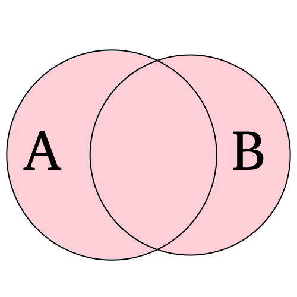
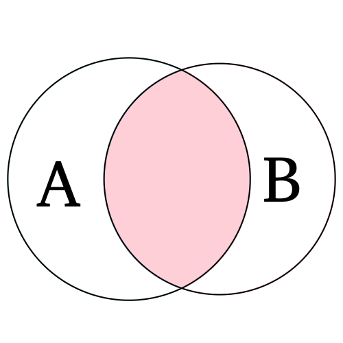
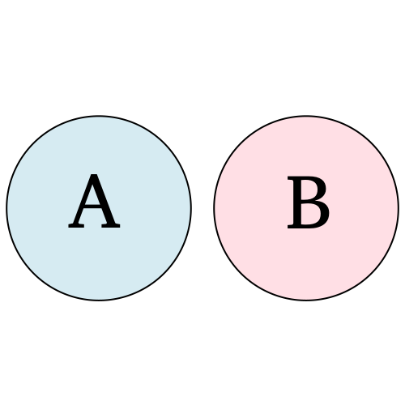
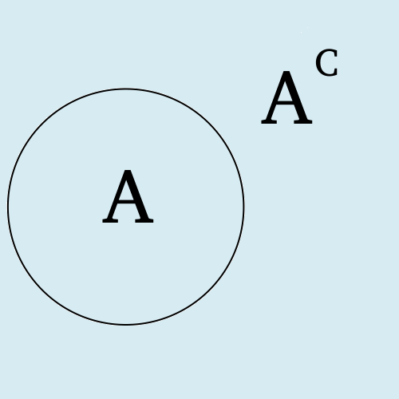
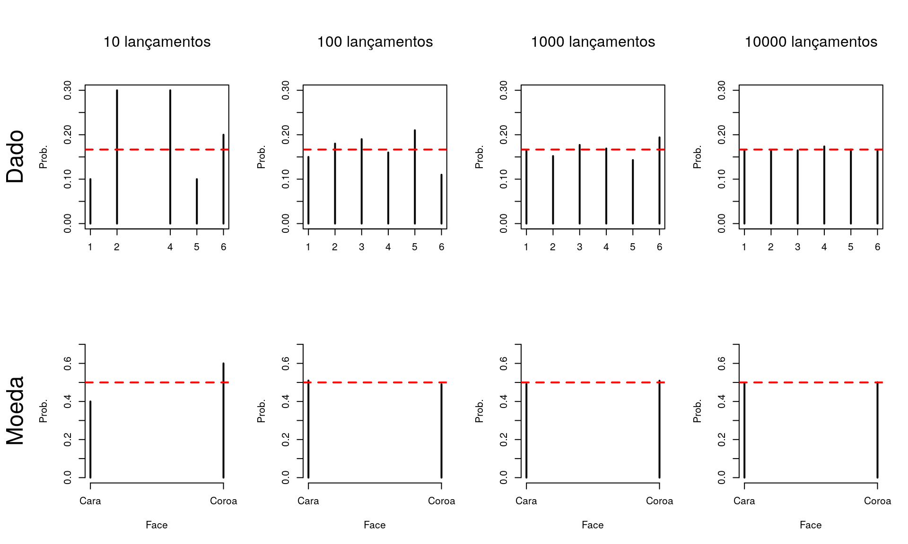

Noções de Probabilidade e Estatística
|
Parte 3 - Probabilidades
A teoria das probabilidades é o ramo da matemática que desenvolve e avalia modelos para descrever fenômenos aleatórios. É a base teórica para o desenvolvimento das técnicas estatísticas.
Consiste em descrever o conjunto de resultados possíveis do fenômeno e atribuir pesos a cada possível resultado, refletindo suas chances de ocorrência, estes pesos são as chamadas probabilidades.
Os fenômenos podem ser classificados como determinísticos e aleatórios dependendo de como ocorre seu desfecho em diversas tentativas.
Fenômenos determinísticos: algo que, quando repetido diversas vezes, tem sempre o mesmo desfecho, isto é, o mesmo resultado.
Fenômenos aleatórios: algo que, quando repetido diversas vezes, pode ter diferentes desfechos. É tratado como aleatório pois antes da execução não há como saber qual dos possíveis resultados será observado. Portanto, um fenômeno aleatório é uma situação ou acontecimento cujos resultados não podem ser previstos com certeza.
Eventos são resultados ou um subconjunto de resultados de um experimento aleatório, usualmente são representados por letras latinas maiúsculas (A, B, C, …). A teoria dos conjuntos é utilizada para definir operações com eventos. Alguns conceitos importantes são:
\(\\\)
Conjunto vazio: conjunto sem elementos, denotado por \(\phi\).
União: sejam dois eventos \(A\) e \(B\), a união é denotada por \(A ∪ B\) e representa a ocorrência de, pelo menos, um dos eventos A ou B.




Probabilidade é uma função \(P(·)\) que atribui valores que mensuram a chance de ocorrência de eventos do espaço amostral, de tal forma que que atenda as condições:
\(0 \leq P(A) \leq 1, \forall A \in \Omega\)
\(P(\Omega) = 1\)
\(P \left ( ∪_{j=1}^{n} A_{j} \right ) = \sum_{j=1}^{n} P(A_{j})\), desde que os \(A_{j}\) sejam disjuntos.
Considerando o que foi apresentado até o momento, o problema agora é: como atribuir probabilidades aos elementos do espaço amostral?
As principais maneiras de atribuir probabilidades são:
A forma clássica: baseia-se nas características teóricas da realização do fenômeno.
A forma frequentista: baseia-se nas frequências de ocorrência do fenômeno. Para um grande número de repetições, a frequência relativa dos eventos do espaço amostral são estimativas da verdadeira probabilidade. Intuitivamente é possível conjecturar que à medida que o número de repetições aumenta, as frequências relativas se estabilizam em um número que chamaremos de probabilidade.
Considere dois experimentos: o lançamento de um dado e o lançamento de uma moeda. Considerando que sejam honestos, imaginamos que a probabilidade de uma face qualquer do dado aparecer em um lancamento seja 1/6 (considerando que são 6 faces e todas tem a mesma chance de ocorrência já que o dado é equilibrado). O mesmo para a moeda: considerando que são duas faces, a probabilidade de observar qualquer uma delas é igual a 1/2. Estas suposições são resultantes da atribuição de probabilidades pela forma clássica.
Pela forma frequentista deveríamos repetir o experimento de lançar o dado e a moeda um grande número de vezes já que a Lei dos Grandes Números nos diz que as estimativas das probabilidades dadas pelas frequências relativas tendem a ficar melhores com mais observações.
Os gráficos a seguir apresentam o resultado da simulação de diversos lançamentos de um dado e uma moeda, note que quanto maior o número de lançamentos mais próxima a probabilidade obtida fica daquela obtida pela forma clássica:

A probabilidade da união de eventos é calculada através da regra da adição de probabilidades:
\[P(A ∪ B) = P(A) + P(B) − P(A ∩ B)\]
Se A e B forem disjuntos, a expressão se reduz à soma das probabilidades.
Como consequência da regra da adição, obtemos que, para qualquer evento \(A \subset \Omega\):
\[P(A) = 1 - P(A^{c})\]
Consequentemente:
\[P(A ∪ A^{c}) = P(\Omega) = 1\]
Em muitas situações, o fenômeno de interesse pode ser separado em etapas. A informação do que ocorreu em uma etapa pode influenciar nas etapas seguintes. Nestas situações há um ganho de informação e pode-se recalcular as probabilidades. Estas probabilidades são as chamadas probabilidades condicionais. Dados dois eventos A e B, a probabilidade condicional de A ocorrer, dado que ocorreu B é representado por P(A|B).
\[P(A|B) = \frac{P(A ∩ B)}{P(B)}\]
\[P(A|B) = P(A)\]
Da definição de probabilidade condicional, é possível deduzir a regra do prodto:
\[P({A ∩ B}) = P(A|B)P(B),\] com \(P(B)>0\).
Dois eventos A e B são independentes se a informação da ocorrência de um não altera a probabilidade de ocorrência do outro:
\[P(A|B) = P(A), P(B) > 0\] ou, de forma equivalente:
\[P({A ∩ B}) = P(A)P(B)\]
Os eventos \(C_1, C_2, ..., C_k\) formam uma partição do espaço amostral se eles não tem interseção entre si e sua união é igual ao espaço amostral. Isto é:
\(C_i ∩ C_j = \phi\), para \(i \neq j\)
\(∪_{i=1}^{k} C_{i} = \Omega\)
Suponha que os eventos \(C_1, C_2, ..., C_k\) formem uma partição de \(\Omega\) e que suas probabilidades sejam conhecidas.Suponha ainda que, para um evento A, se conheçam as probabilidades \(P(A|C_i)\) para todo \(i = 1,2,...,k\). Entãom para qualquer \(j\) temos que:
\[P(C_j|A) = \frac{P(A|C_j)P(C_j)}{\sum_{i=1}^{k}P(A|C_i)P(C_i)},\ j=1,2,...,k\]
Críticas e sugestões a este material sempre serão bem vindas.
Para entrar em contato comigo, envie uma mensagem para lineuacf@gmail.com.